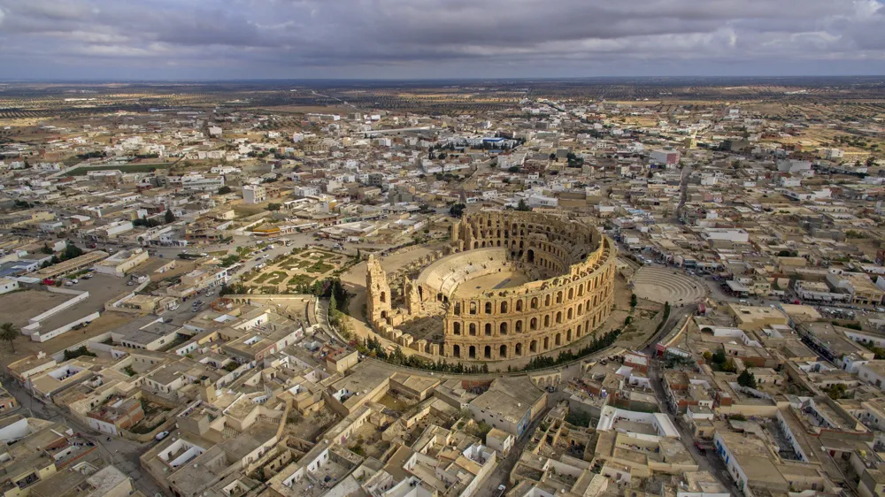
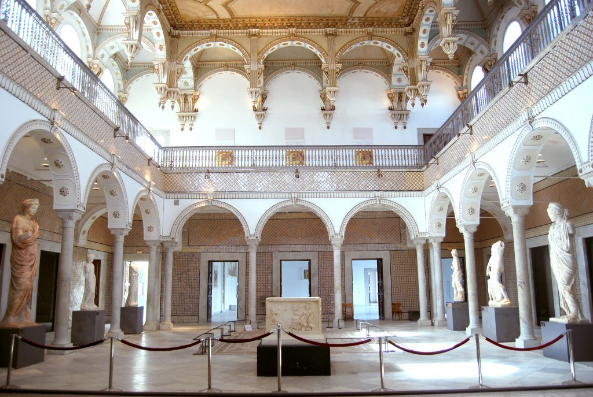
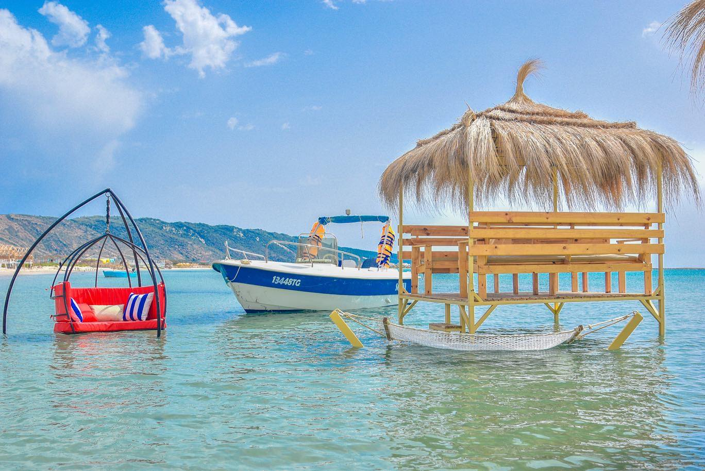

I

Tunisia
 Blogs
Blogs
 Photos
Photos
 About
About
Latest News
- Crime and Legal News
- Sports News
-
 Entertainment News
Entertainment News
- Economy and Politics
Tunisia, Sidi Bou Saîd
You thought it’s Greece at first, right?
.png)

Monuments
Is a stunning UNESCO World Heritage Site and one of the largest
Roman amphitheaters in the world. Built in the 3rd century, this architectural marvel once
hosted thrilling gladiator games and could accommodate up to 35,000 spectators

Museums
Tunisia is home to a rich cultural heritage, beautifully preserved
in its many museums. The Bardo National Museum in Tunis, renowned for its vast collection of
Roman mosaics, offers a glimpse into ancient civilizations.

Beaches
A trip to Tunisia promises a wide range of attractions, it’s the
country’s breathtaking coastline that steals the show – from the vibrant beaches of Hammamet
to
the natural beauty of Djerba
island and the secluded coves of Cape Bon; Tunisia is a beach-lovers’ paradise.

Food
Tunisian cuisine is best known for couscous, the national dish often
paired with spicy stews, and Brik, a crispy pastry filled with egg and tuna. Other popular
dishes include lablabi, a hearty chickpea soup, and shakshuka, a tomato and
egg
stew, and harissa